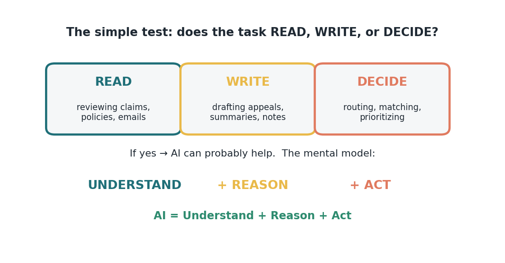
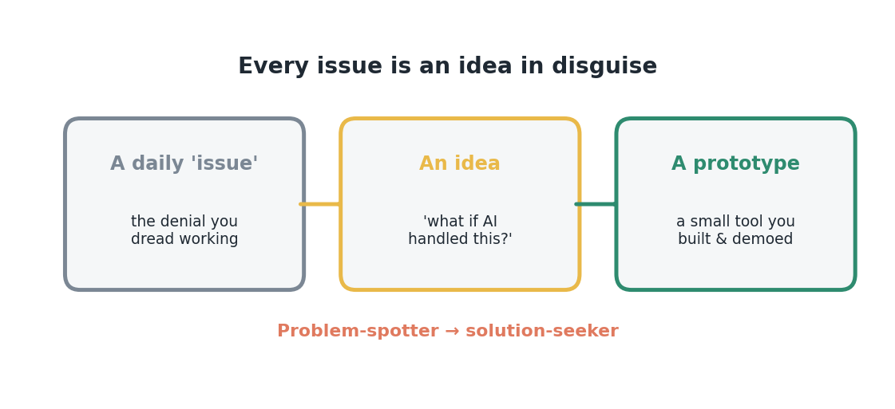

Bridge 1 — Your issues are ideas
Behind the invitation to build is an economic shift that changes what's worth your time to fix. The Stanford AI Index reports that the cost of AI inference fell roughly 280x in about 18 months, and 78% of organizations now use AI in at least one function. Building has collapsed in cost and spread in practice — which means the everyday friction on your desk is now, for the first time, economically buildable.
Reframe your workload as an idea backlog (Figure B1.1). Every recurring task is a candidate, and the ones worth prioritizing share a signature: high frequency, clear rules, and low genuine judgment. Those are the tasks where a small tool pays back fastest. You don't need a data team to find them — you already maintain the list in your head, under the heading "things I wish I didn't have to do every week." That list is your prioritized build backlog.

Use a fast qualifier to screen candidates: the READ / WRITE / DECIDE test (Figure B1.2). If a task mostly involves reading information, writing something, or making a routine decision, AI can probably help. Most finance and RCM work is dense with all three — reviewing claims and policies (read), drafting appeals and summaries (write), routing and matching (decide). A task that hits two or three of these is a high-probability candidate; one that hits none is likely the wrong first project.

For scoping the value, hold a simple model of the capability: AI = Understand + Reason + Act. The ROI comes from chaining all three — understanding the input, reasoning about it, and acting — which is what lets a tool carry a whole task rather than assist one step. Tasks where all three can run with a human only reviewing the output are where time savings concentrate. Estimate the payoff crudely: frequency × minutes-per-instance × fraction automatable. Even rough math surfaces the winners.
The strategic point for a team lead: idea generation is not the bottleneck, and it never was. Your people are sitting on dozens of high-value automation candidates disguised as complaints. What's changed is that the cost of turning one of those ideas into a working prototype has fallen far enough that a non-engineer can do it in a day. The scarce resource is no longer technical capability or budget — it's the mindset shift from enduring friction to treating it as buildable.
That reframes the hackathon's real purpose (Figure B1.3). It's not primarily about the tools built in the room; it's about converting a team of expert problem-spotters into solution-seekers who now know their own backlog is an idea backlog. The ROI of that shift compounds long after the event, every time someone looks at an annoying task and thinks "that's buildable" instead of "that's just the job."

Forward this to your team with one prompt: bring your three most annoying recurring tasks to December — that's a pre-qualified idea backlog worth building from.
Sources
- Issues-are-ideas mindset; READ/WRITE/DECIDE filter; Understand + Reason + Act — The AI Hackathon Guide (Karadimitriou, Nova Science Ventures, 2026), https://kosmas10.github.io/ai-hackathon-guide/
- AI inference cost fell ~280x in 18 months; 78% of organizations use AI in ≥1 function — Stanford AI Index 2025 (hai.stanford.edu).